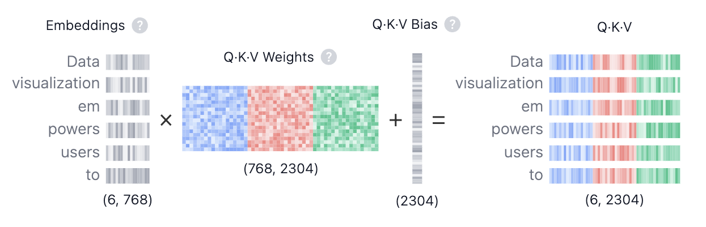
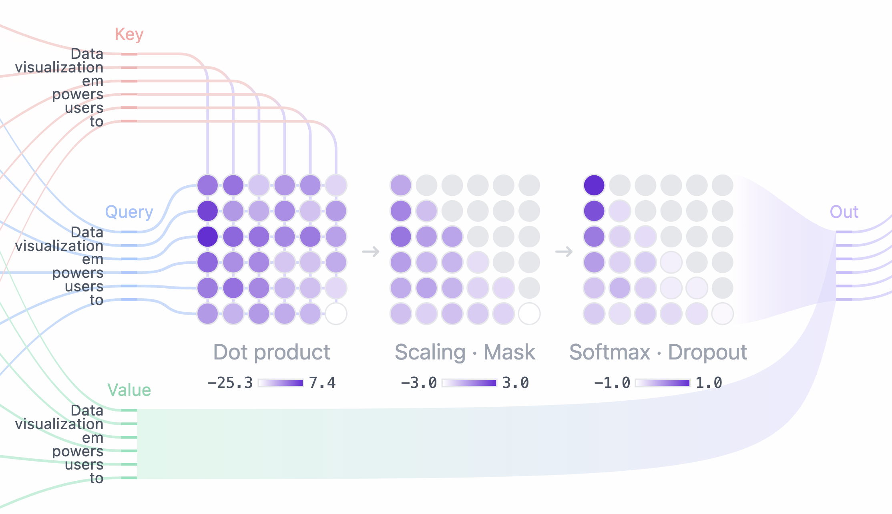
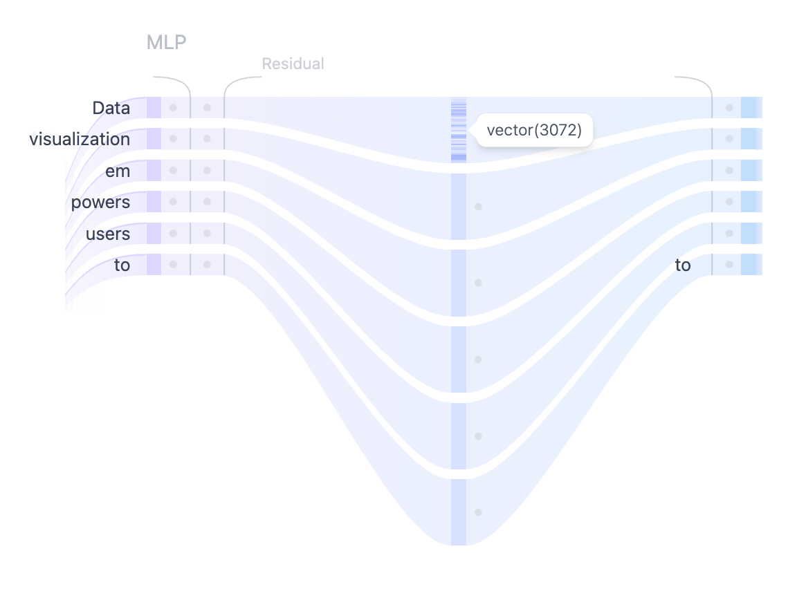
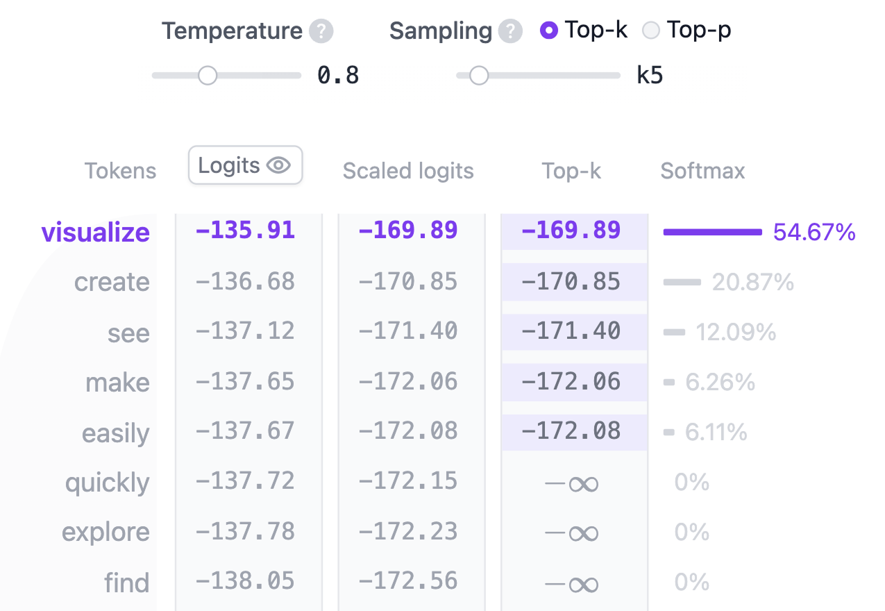

ما هو نموذج الترانسفورمر؟ (Transformer)
الترانسفورمر (Transformer) هو معمارية شبكات عصبية أحدثت ثورة جذرية غيّرت مسار الذكاء الاصطناعي بالكامل. قُدِّم الترانسفورمر لأول مرة في الورقة البحثية التاريخية "Attention is All You Need" في عام 2017، ومنذ ذلك الحين أصبح المعمارية الأساسية المهيمنة على نماذج التعلم العميق (Deep Learning)، مشغلاً أقوى النماذج التوليدية للنصوص مثل GPT من OpenAI، و Llama من Meta، و Gemini من Google. ولا يقتصر دور الترانسفورمر على النصوص فحسب، بل يمتد إلى توليد الصوت (Audio Generation)، التعرف على الصور (Vision Transformers)، التنبؤ ببنية البروتينات (Protein Structure)، وحتى ألعاب التحدي واتخاذ القرار (Game Playing)، مما يبرهن على مرونته الفائقة عبر شتى المجالات.
تعمل نماذج الترانسفورمر التوليدية للنصوص جوهرياً وفق مبدأ التنبؤ بالرمز التالي (Next-Token Prediction): بناءً على النص المُدخل (Prompt) من المستخدم، ما هو الرمز الأكثر احتمالاً (سواء كان كلمة كاملة أو جزءاً من كلمة) الذي سيعقب هذا المدخل؟ يكمن السر والقوة الدافعة للترانسفورمر في آلية الانتباه الذاتي (Self-Attention)، والتي تتيح للنموذج معالجة تسلسل النص بأكمله دفعة واحدة والتقاط العلاقات بعيدة المدى بين الكلمات بكفاءة تتفوق على جميع المعماريات السابقة.
تعد عائلة نماذج GPT-2 من أبرز الأمثلة التأسيسية لنماذج الترانسفورمر التوليدية. تعمل أداة Transformer Explainer بنسخة نموذج GPT-2 (small) التي تحتوي على 124 مليون معامل (Parameters). ومع أنه ليس النموذج الأحدث أو الأضخم اليوم، إلا أنه يشترك في البنية الأساسية والمبادئ المعمارية نفسها المستخدمة في أحدث نماذج الذكاء الاصطناعي اليوم، مما يجعله نقطة انطلاق مثالية وملموسة لفهم أعماق هذه التقنية.
ما هي فكرة "الانتباه هو كل ما تحتاجه" (Attention is All You Need)؟ ولماذا أحدثت ثورة؟
لفهم القفزة النوعية التي أحدثها الترانسفورمر، يجب أولاً معرفة كيف كان الذكاء الاصطناعي يتعامل مع اللغات قبل عام 2017.
المعماريات السابقة: الشبكات المتكررة (RNNs & LSTMs)
- المعالجة التسلسلية المتتالية (Sequential Processing): كانت تقرأ الجملة كلمة تلو الأخرى من البداية إلى النهاية.
- عنق زجاجة الذاكرة وتلاشي التدرج (Memory Bottleneck): عند الوصول لنهاية جملة طويلة، يميل النموذج لنسيان بداية النص، ويفقد القدرة على ربط الكلمات المتباعدة بدقة.
- استحالة الموازاة على معالجات الرسومات (No Parallelization): لا يمكن البدء في معالجة الكلمة العاشرة إلا بعد الانتهاء التام من الكلمة التاسعة، مما جعل تدريب النماذج بطيئاً جداً ومحدوداً.
ثورة الترانسفورمر: الانتباه الذاتي (Self-Attention)
- المعالجة المتوازية دفعة واحدة (Fully Parallel): يستقبل الترانسفورمر كامل النص مرة واحدة، مما يتيح استغلال القوة الحسابية الخارقة لمعالجات الرسومات (GPUs/TPUs).
- الاتصال المباشر بين جميع الكلمات (Direct Attention): تستطيع كل كلمة في النص أن تنتبه إلى وتتفاعل مع أي كلمة أخرى مباشرة وبخطوة واحدة، بغض النظر عن المسافة بينهما.
- قابلية التوسع غير المسبوقة (Massive Scalability): فتح هذا الابتكار الباب لتدريب نماذج بمليارات وتريليونات المعاملات على الإنترنت بالكامل، وولادة عصر نماذج اللغة الكبيرة (LLMs).
رسالة ورقة "Attention is All You Need" كانت جريئة وموجزة: "لسنا بحاجة للشبكات المتكررة (RNN) ولا للمرور التسلسلي البطيء؛ آلية الانتباه الذاتي وحدها كافية لربط كل عناصر السياق ببعضها وبأعلى كفاءة ممكنة."
معمارية الترانسفورمر (Transformer Architecture)
يتكون كل نموذج ترانسفورمر لتوليد النصوص من هذه المكونات الثلاثة الرئيسية:
- التضمين (Embedding): يتم أولاً تقطيع النص المُدخل إلى وحدات أصغر تُسمى رموزاً (Tokens)، قد تكون كلمات أو أجزاء من كلمات. بعد ذلك تُحوَّل هذه الرموز إلى متجهات رقمية تُسمى التضمينات (Embeddings)، وهي متجهات تحمل المعنى الدلالي واللغوي لكل رمز بالإضافة إلى موقعه في الجملة.
- كتلة الترانسفورمر (Transformer Block): هي الوحدة البنائية الأساسية التي تعالج البيانات المدخلة وتطور تمثيلها عبر طبقات متعددة. وتتضمن كل كتلة:
- آلية الانتباه (Attention Mechanism): المكون الجوهري في كتلة الترانسفورمر. تتيح للرموز التواصل وتبادل المعلومات فيما بينها، مما يمكن النموذج من فهم السياق والعلاقات النحوية والدلالية بين الكلمات.
- طبقة شبكة التغذية الأمامية (MLP - Multilayer Perceptron): شبكة عصبية تماثلية تعمل على كل رمز بشكل مستقل. فبينما تتولى آلية الانتباه توجيه ونقل المعلومات بين الرموز المختلفة، تتولى طبقة MLP تنقيح وتعميق تمثيل كل رمز بذاته.
- احتمالات المخرجات (Output Probabilities): في النهاية، تقوم الطبقة الخطية (Linear layer) ودالة سوفت ماكس (Softmax) بتحويل المتجهات النهائية إلى توزيع احتمالي لجميع كلمات القاموس، مما يمكّن النموذج من التنبؤ بالرمز التالي الأكثر ملائمة في التسلسل.
التضمين (Embedding)
لنفترض أنك تريد توليد نص باستخدام نموذج الترانسفورمر، وقمت بإدخال النص التالي: “Data visualization empowers users to”. يحتاج هذا النص إلى التحول لصيغة رقمية يستطيع النموذج قراءتها ومعالجتها حسابياً. هنا يأتي دور مرحلة التضمين: فهي تحول الكلمات إلى متجهات عددية غنية بالمعنى. ولتحويل النص إلى تضمين مكتمل، نمر بأربع خطوات: 1) تقطيع النص (Tokenization)، 2) استخراج تضمين الرموز (Token Embedding)، 3) إضافة معلومات الموضع (Positional Encoding)، وأخيراً 4) جمع تضمين الرمز مع ترميز الموضع للحصول على التضمين النهائي. دعنا نرى تفاصيل كل خطوة:

الخطوة 1: التقطيع (Tokenization)
التقطيع (Tokenization) هو عملية تجزئة النص المدخل إلى وحدات أصغر سهلة الإدارة تُسمى رموزاً (Tokens). قد يمثل الرمز كلمة كاملة أو مقطعاً صرفياً. فمثلاً الكلمتان "Data" و "visualization" تقابل كل منهما رمزاً مستقلاً، بينما كلمة مثل "empowers" يتم تقسيمها إلى مقطعين (رمزين). يُحدّد قاموس الرموز (Vocabulary) مسبقاً قبل تدريب النموذج: يحتوي قاموس نموذج GPT-2 على 50,257 رمزاً فريداً لكل منها معرّف رقمي (Token ID).
الخطوة 2: تضمين الرمز (Token Embedding)
يمثل نموذج GPT-2 (small) كل رمز في القاموس بمتجه عددي بأبعاد قدرها 768 بُعداً (تختلف الأبعاد باختلاف حجم النموذج). يتم تخزين هذه المتجهات في مصفوفة ضخمة أبعادها (50,257, 768) تضم ما يقارب 39 مليون معامل! تسمح هذه المصفوفة للنموذج بربط كل رمز بمعنى دلالي؛ حيث تتوضع الكلمات المتقاربة في المعنى أو الاستخدام السياقي قريبة من بعضها في هذا الفضاء الرياضي متعدد الأبعاد، بينما تتباعد الكلمات المختلفة دلالياً.
الخطوة 3: الترميز الموضعي (Positional Encoding)
نظراً لأن الترانسفورمر يعالج جميع الرموز في الوقت نفسه بدون ترتيب تسلسلي متأصل، يجب تزويده بمعلومات تدل على ترتيب وموقع كل كلمة في الجملة. هناك طرق متعددة للترميز الموضعي؛ يتبع نموذج GPT-2 نهج تدريب مصفوفة موضعية خاصة به بالكامل من البداية (Learned Positional Embeddings)، حيث يتعلم متجه الموضع بالتزامن مع تدريب النموذج.
الخطوة 4: التضمين النهائي (Final Embedding)
في النهاية، نقوم بجمع متجه تضمين الرمز مع متجه ترميز موضعه جمعاً عنصرياً بسيطاً. هذا التمثيل المدمج يجمع بدقة بين المعنى الدلالي للكلمة وموقعها الفعلي في تسلسل النص المدخل.
كتلة الترانسفورمر (Transformer Block)
يقع قلب المعالجة الحسابية للترانسفورمر في كتلة الترانسفورمر، والتي تتألف من آليتين أساسيتين: الانتباه الذاتي متعدد الرؤوس (Multi-Head Self-Attention) وطبقة شبكة التغذية الأمامية (MLP). تتكون معظم النماذج من عدة كتل متتالية مكدسة فوق بعضها البعض. وتتطور تمثيلات الرموز تدريجياً عبر الطبقات، من الكتلة الأولى حتى الأخيرة، مما يسمح للنموذج ببناء فهم تراكمي معقد وعالي التجريد للنص. يحتوي نموذج GPT-2 (small) الذي نستكشفه هنا على 12 كتلة ترانسفورمر متتالية.
الانتباه الذاتي متعدد الرؤوس (Multi-Head Self-Attention)
تمكّن آلية الانتباه الذاتي النموذج من رصد العلاقات المتبادلة بين جميع الرموز في الجملة، بحيث يتأثر تمثيل كل رمز بالسياق المحيط به. وتتيح الرؤوس المتعددة (Multiple Attention Heads) للنموذج النظر إلى هذه العلاقات من زوايا متعددة في آن واحد؛ على سبيل المثال، قد يركز أحد الرؤوس على الروابط النحوية القريبة بينما يركز رأس آخر على المعنى الدلالي العام أو مرجعيات الضمائر البعيدة. دعنا نستعرض خطوات حساب الانتباه الذاتي بالتفصيل:
الخطوة 1: مصفوفات الاستعلام والمفتاح والقيمة (Query, Key, and Value Matrices)

يتم تحويل متجه تضمين كل رمز إلى ثلاثة متجهات مميزة: الاستعلام Query (Q)، المفتاح Key (K)، و القيمة Value (V). تُحسب هذه المتجهات عن طريق ضرب مصفوفة التضمين المدخلة في مصفوفات أوزان يتم تعلّمها خلال التدريب لكل من Q و K و V. ولتقريب الفكرة، يمكن استخدام تشبيه محرك البحث:
- الاستعلام Query (Q): هو نص البحث الذي تكتبه في شريط محرك البحث. وهو يمثل الرمز الحالي الذي يريد "البحث عن معلومات ذات صلة به في بقية النص".
- المفتاح Key (K): هو عنوان كل صفحة ويب تظهر في نافذة نتائج البحث. ويمثل الرموز المتاحة التي يمكن للاستعلام أن ينتبه إليها.
- القيمة Value (V): هو المحتوى الفعلي للصفحة. فبمجرد أن يتطابق الاستعلام (Query) مع المفتاح المناسب (Key)، نريد الحصول على المحتوى الفعلي (Value) لأكثر الصفحات صلة وأهمية.
باستخدام قيم QKV هذه، يحسب النموذج درجات الانتباه (Attention Scores) التي تحدد مقدار التركيز والوزن الذي يجب أن يمنحه كل رمز لسائر الرموز الأخرى عند توليد التوقعات.
الخطوة 2: تقسيم الرؤوس المتعددة (Multi-Head Splitting)
تُقسّم متجهات الاستعلام (Query) و المفتاح (Key) و القيمة (Value) إلى رؤوس متعددة—في حالة نموذج GPT-2 (small)، تُقسّم إلى 12 رأساً. يعالج كل رأس شريحة من أبعاد التضمين باستقلالية تامة، مما يسمح بالتقاط علاقات نحوية ودلالية مختلفة ومتنوعة بالتوازي.
الخطوة 3: الانتباه الذاتي المقنّع (Masked Self-Attention)
داخل كل رأس انتباه، نُجري حسابات الانتباه الذاتي المقنّع. تتيح هذه الآلية للنموذج توليد النصوص من خلال التركيز على الأجزاء السابقة مع منعه تماماً من الاطلاع على الكلمات المستقبلية التي لم تُولّد بعد.

- الضرب النقطي (Dot Product): ينتج عن ضرب مصفوفة الاستعلام (Query) في منقول مصفوفة المفتاح (Key) ما يُعرف بـ درجات الانتباه (Attention Scores)، وهي مصفوفة مربعة تعكس درجة تقارب وقوة العلاقة بين كل زوج من الرموز.
- التحجيم والقناع (Scaling · Mask): يتم قياس درجات الانتباه بالقسمة على الجذر التربيعي لأبعاد الرأس (لتحقيق الاستقرار العددي)، ثم يُطبّق قناع (Mask) على المثلث العلوي من المصفوفة بجعل قيمه سالباً لا نهائياً ( ) لمنع النموذج من "التلصص" على المستقبل؛ فالنموذج يجب أن يتعلم التنبؤ بالكلمة التالية بالاعتماد حصراً على ما سبقها.
- سوفت ماكس والإسقاط (Softmax · Dropout): بعد التحجيم وتطبيق القناع، تُحوّل درجات الانتباه إلى احتمالات حقيقية عبر دالة سوفت ماكس (Softmax) بحيث يصبح مجموع كل صف مساوياً لـ 1، وتدل كل قيمة على وزن وأهمية كل كلمة سابقة للكلمة الحالية.
الخطوة 4: المخرجات ودمج الرؤوس (Output and Concatenation)
يقوم النموذج بعد ذلك بضرب أوزان الانتباه المحسوبة في مصفوفة القيمة (Value) للحصول على
المخرج النهائي
لرأس الانتباه. ونظراً لأن نموذج GPT-2 يمتلك 12 رأس انتباه، فإن مخرجات جميع هذه الرؤوس تُدمج معاً (Concatenation) ثم تُمرر عبر طبقة إسقاط خطي نهائية لتوحيد الأبعاد مجدداً.
شبكة التغذية الأمامية (MLP: Multi-Layer Perceptron)

بعد أن تلتقط رؤوس الانتباه العلاقات المعقدة بين الكلمات، تُمرر المخرجات المدمجة إلى طبقة شبكة التغذية الأمامية متعددة الطبقات (MLP) لتعميق قدرة النموذج التمثيلية. تتألف كتلة MLP من تحويلين خطيين وبينهما دالة تنشيط غير خطية من نوع GELU.
يقوم التحويل الخطي الأول بتوسيع أبعاد المتجه بمقدار 4 أضعاف، من 768 إلى 3072 بُعداً. تتيح هذه التوسعة (Expansion) للنموذج إسقاط تمثيلات الرموز في فضاء أعلى أبعاداً يستطيع من خلاله التقاط أنماط معقدة وعلاقات لغوية غنية يصعب تمثيلها في الأبعاد الأصلية.
أما التحويل الخطي الثاني، فيقوم بضغط الأبعاد وإعادتها إلى الحجم الأصلي 768. تعيد هذه الخطوة المتجهات لحجمها الطبيعي مع الحفاظ على الأنماط غير الخطية المفيدة التي اكتسبتها في مرحلة التوسيع والتنشيط.
على عكس آلية الانتباه الذاتي التي تدمج المعلومات وتوزعها بين الرموز المختلفة، تعالج طبقة MLP كل رمز بشكل مستقل ومعزول، مما يثري ذاكرة النموذج وقدرته الاستيعابية العامة.
احتمالات المخرجات (Output Probabilities)
بعد معالجة النص عبر جميع كتل الترانسفورمر الـ 12، يُمرر التمثيل النهائي عبر طبقة خطية ختامية للتحضير لتوقع الرمز التالي. تُسقط هذه الطبقة المتجه النهائي في فضاء أبعاده بحجم القاموس 50,257، حيث يحصل كل رمز في القاموس على درجة خام تُسمى logit. وبما أن أي كلمة في اللغة يمكن نظرياً أن تكون الكلمة التالية، تسمح لنا هذه الدرجات بترتيب الكلمات بحسب أرجحيتها، ثم نطبق دالة سوفت ماكس (Softmax) لتحويل هذه الدرجات إلى توزيع احتمالي حقيقي مجموعه يساوي 1 (100%).

الخطوة الأخيرة هي اختيار الرمز التالي من خلال أخذ العينات (Sampling) من هذا التوزيع. هنا يلعب معامل الحرارة (Temperature) دوراً جوهرياً في ضبط سلوك النموذج. رياضياً، العملية بسيطة جداً: نقوم بقسمة قيم اللوجيتس (logits) على قيمة الحرارة (Temperature) قبل تمريرها لسوفت ماكس:
temperature = 1: القسمة على 1 لا تغير قيم اللوجيتس ويبقى التوزيع الاحتمالي القياسي كما تعلمه النموذج.temperature < 1: درجة الحرارة المنخفضة تجعل النموذج أكثر ثقة وتحديداً، حيث تزيد الفارق بين الكلمات الأكثر ترجيحاً والكلمات الأخرى، مما يؤدي إلى نصوص أكثر قابلية للتنبؤ واستقراراً.temperature > 1: درجة الحرارة المرتفعة تفرّط التوزيع الاحتمالي وتجعله أكثر تسطحاً، مما يمنح الكلمات الأقل احتمالاً فرصة للظهور، وهو ما يفسح المجال للمزيد من العشوائية وما يسميه البعض "إبداع" النموذج (Creativity).
بالإضافة إلى ذلك، يمكن ضبط عملية أخذ العينات بدقة أكبر باستخدام معاملي top-k و top-p:
أخذ العينات بأعلى ك (top-k sampling): يحصر خيارات التوليد في أعلى k من الرموز الأكثر احتمالاً فقط، متجاهلاً بقية القاموس تماماً لتجنب توليد كلمات غير منطقية.أخذ العينات بالاحتمال التراكمي (top-p sampling): يختار أصغر مجموعة من الكلمات التي يبلغ مجموع احتمالاتها المتراكمة نسبة p (مثلاً 90%)، مما يسمح بحجم خيارات ديناميكي يتكيف مع ثقة النموذج في كل خطوة.
من خلال الموازنة بين temperature و top-k و top-p، يمكنك توجيه النموذج ليكون دقيقاً ومحدداً أو متنوعاً ومبتكراً وفق متطلبات مهمتك.
مكونات معمارية مساعدة (Auxiliary Architectural Features)
توجد عدة آليات معمارية مساعدة تساهم بفاعلية في نجاح واستقرار نماذج الترانسفورمر. ورغم أنها ليست جوهر فكرة الانتباه، إلا أنها ضرورية جداً أثناء عملية التدريب لضمان تقارب النموذج واستقراره الرياضي:
تطبيع الطبقات (Layer Normalization)
يساعد تطبيع الطبقات (Layer Normalization) على استقرار تدريب الشبكة وتسريع تقاربها. ويعمل عبر ضبط مدخلات الطبقة لتمتلك توزيعاً إحصائياً معيارياً (متوسط حسابي صفر وتباين واحد). يقلل هذا التطبيع من تباين التوزيعات الداخلية ويجعل الشبكة أقل حساسية للقيم الأولية للأوزان. يُطبّق تطبيع الطبقات مرتين داخل كل كتلة ترانسفورمر: مرة قبل آلية الانتباه، ومرة قبل طبقة MLP.
الإسقاط العشوائي (Dropout)
الإسقاط (Dropout) هو أسلوب تنظيم (Regularization) لمنع فرط التخصيص (Overfitting) في الشبكات العصبية، وذلك من خلال إيقاف تنشيط نسبة عشوائية من الخلايا العصبية أثناء التدريب. يدفع هذا الإجراء النموذج للاعتماد على ميزات متعددة وقوية بدلاً من الاعتماد على مسار وحيد. وأثناء مرحلة التوليد الفعلي (Inference)، يتم إيقاف الإسقاط بالكامل للاستفادة من كامل قدرة النموذج.
اتصالات التخطي المتبقية (Residual Connections)
قُدّمت اتصالات التخطي المتبقية (Residual Connections) أول مرة في معمارية ResNet عام 2015 وأحدثت نقلة هائلة في إمكانية تدريب شبكات عميقة جداً. وهي باختصار مسارات سريعة تتيح لمدخلات الطبقة تجاوزها والجمع مباشرة مع مخرجاتها. يحل هذا الاتصال مشكلة تلاشي التدرج (Vanishing Gradient Problem) ويضمن تدفق الإشارات والتحديثات بسلاسة عبر طبقات النموذج الكثيرة دون انقطاع.
الميزات التفاعلية في هذه الأداة
صُممت أداة Transformer Explainer لتكون تفاعلية بالكامل لتمكينك من استكشاف الأعماق الرياضية للترانسفورمر بنفسك:
- أدخل نصك الخاص (Input Form) لترى خطوة بخطوة كيف يعالجه النموذج ويتنبأ بالكلمة التالية. تفقّد أوزان الانتباه والحسابات الوسيطة في كل مرحلة.
- تحكم بشريط الحرارة (Temperature Slider) لملاحظة أثر تغيير قيمة الحرارة على مدى عشوائية أو تحديد التوزيع الاحتمالي للكلمات.
- جرّب خيارات أخذ العينات (top-k و top-p) وشاهد كيف يتغير منحنى الاحتمالات واستبعاد الخيارات الأقل ترجيحاً.
- تفاعل مع خرائط الانتباه (Attention Maps) ومرر المؤشر فوق أي رمز لتكتشف درجة تركيز النموذج على الكلمات الأخرى وكيف يلتقط السياق.
فيديو توضيحي (Video Tutorial)
كيف تم بناء وتطوير أداة Transformer Explainer؟
تتميز أداة Transformer Explainer بتشغيل نموذج GPT-2 (small) حقيقي ومباشر بالكامل داخل متصفحك. يستند هذا النموذج إلى بناء PyTorch من مشروع nanoGPT لـ Andrej Karpathy وقد تم تحويله إلى صيغة ONNX Runtime للتشغيل فائق السرعة عبر محرك الويب بالمتصفح دون الحاجة لخادم سحابي. واجهة المستخدم مبنية باستخدام لغة JavaScript مع إطار العمل Svelte ومكتبة D3.js لإنشاء المخططات والرسوم البيانية التفاعلية الديناميكية.
فريق التطوير والتقدير (Credits)
تم تطوير أداة Transformer Explainer الأصلية بواسطة فريق باحثي Georgia Institute of Technology: Aeree Cho، Grace C. Kim، Alexander Karpekov، Alec Helbling، Jay Wang، Seongmin Lee، Benjamin Hoover، و Polo Chau في مختبر Polo Club of Data Science.
تم تعريب الأداة بالكامل وإضافة الشروح المفاهيمية لخدمة الباحثين والطلاب والمهتمين بالذكاء الاصطناعي في الوطن العربي، مع الحفاظ على دقة المصطلحات التقنية العالمية والمراجع الأصلية.